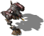
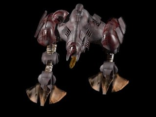

Минотавр


Панель информации в игре
- Скорость:
- 100 км/ч
- Энергия (HP):
- 2250
- Обзор:
- 550 м
- Время производства:
- 91 с
| Оружие | Мощь | Дальность | Цели |
|---|---|---|---|
| Ионный пулемет | 48 | 1-10 | З |
| Ионная пушка | 600 | 1-15 | З |
| Ракета Kолибри | 125 | 2-10 | В |
| Малокалиберный игломет | 12 | 1-6 | ЗВ |
Затраты: Экстракт 6000 Железо 3500 Уголь 4000 Титан 3000
Описание
Этот громоздкий, тяжело бронированный шагоход постепенно замещает своего предшественника. Предназначен для действий на различной местности, несмотря на вес, обладает хорошими скоростью и маневренностью. Эта машина была создана в ответ на появление современных земных средств. Благодаря встроенным кислотным пушкам и ракетам земля-воздух может вступать в бой как с наземными, так и воздушными целями. Используется главным образом там, где не проходят стандартные гусеничные машины прикрытия.
Связанное
- Требует
- Матка, Мега-Фабрика, Минотавр
- Исследуется проектом
- Минотавр
- Производится в
- Мега-Фабрика
- Перевозится в
- Горгона
- Оружие
- Ионный пулемет (slot 0), Ионная пушка (slot 1), Ракета Kолибри (slot 2), Малокалиберный игломет (slot 3)
- Улучшается проектом
- Броня Ликтор, Ионная Энергия 2
Параметры конфигурации, которых нет в игре (8)
HUMAN- 2
TRACE- 1
AILEVEL- 1
TURN_SPEED- 0.016
AIUNIT- AIUNIT_WALKER
SOLDIER_TYPE- SOLDIERTYPE_UNKNOWN
INDEPENDENT- nigdy
TYPE- R_aWALKER